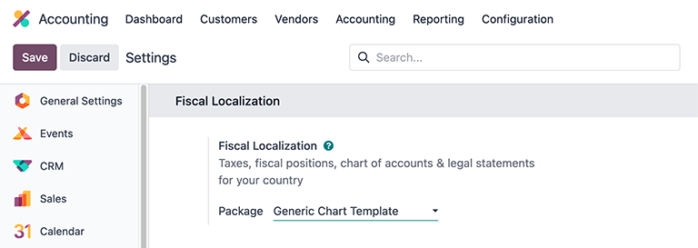

美国¶
Odoo 为美国提供的财务本地化套装遵循由美国公认会计准则（GAAP）。这些准则和规则是由财务会计准则委员会（FASB）制定，并被证券交易委员会（SEC）采用，用于编制财务报表。
此外，Odoo 电子学习平台还提供一系列有关会计主题的视频。这些视频涵盖了如何从零开始、设置配置、完成常用工作流程，并深入介绍了一些特定的使用案例。
配置¶
以下是 Odoo 中供美国会计使用的可用模块。
注解
下面列出的模块仅供参考或为可选模块，这是因为在Odoo中运行美国财务本地化所需的核心要求，已经包含在默认安装包中。
通过导航至 并在顶部的 财政本地化 部分下，查看 包装 字段标签旁边列出的 “通用图表模板” 选项，以验证默认软件包是否在使用中。此图表模板包含 Odoo 会计 应用程序美国本地化的必要设置。
模块安装¶
:ref:`安装 <general/install>`以下模块，以获得美国本地化的所有功能：
名称 |
技术名称 |
描述 |
|---|---|---|
美国 - 会计 |
|
美国本地化的基础会计模块。 |
|
添加美国会计报告。 |
|
美国支票布局 |
|
允许在预先打印的支票纸上打印付款。支持三种最常见的支票格式，并且可以与 checkdepot.net 中的链接支票一起使用。 |
|
将付款作为 NACHA 文件导出，供在美国使用。 |
|
|
导出 1099 数据，以便向第三方进行电子申报。 |
|
|
用于 AvaTax 整合 与 Odoo 的模块。 |
|
|
包括美国工资单的必要规则，包括：
|
|
|
包含美国工资规则所需的会计数据。 |
|
|
将工作条目导出至 ADP 薪酬管理软件。 |
科目表¶
在 Odoo 中，美国本地化的 会计科目表（COA） 遵循标准的 GAAP 结构，将账户分为七大类，并以相应的数值作为单个日记账分录的前缀：
应收账款：指企业已交付或使用商品或服务，但客户尚未支付的应收余额（或信用点）。AR 由标有（或以:guilabel:
1开头）的日记账编号表示。应付账款：企业欠付其债权人或供应商的短期债务，尚未支付。以:guilabel:
2标注（或以:guilabel:2开头）的日记账代码表示。Equity: the amount of money that would be returned to a company’s shareholders if all of the assets were liquidated and all of the company’s debt was paid off in the case of liquidation. Equity is indicated by the journal code labeled (or beginning) with 3 or 9.
Assets: items listed on the balance sheet that contains economic value or have the ability to generate cash flows in the future, such as a piece of machinery, a financial security, or a patent. Assets are indicated by the journal code labeled (or beginning) with 1.
Liability: refers to a company’s financial debts or obligations that arise during the course of business operations. Liabilities are indicated by the journal code labeled (or beginning) with 2.
Income: synonymous with net income, this is the profit a company retains after paying off all relevant expenses from sales revenue earned. Income is indicated by the journal code labeled (or beginning) with 4 or 6.
Expenses: the cost of operations that a company incurs to generate revenue. Expenses are indicated by the journal code labeled (or beginning) with a 6.
小技巧
Predefined accounts are included in Odoo, as part of the CoA that’s installed with the US localization package. The accounts listed below are preconfigured to perform certain operations within Odoo. It is recommended to not delete these accounts; however, if changes are needed, rename the accounts instead.
类型 |
Account Name |
|---|---|
Current Assets |
Bank Suspense Account
Outstanding Receipts
Outstanding Payments
Liquidity Transfer
Stock Valuation
Stock Interim (Received)
Stock Interim (Delivered)
Cost of Production
|
Income |
Foreign Exchange Gain
Cash Difference Gain
Cash Discount Gain
|
Expenses |
Cash Discount Loss
Foreign Exchange Loss
Cash Difference Loss
|
Current Year Earnings |
Undistributed Profits/Losses |
Receivable |
Account Receivable |
Payable |
Account Payable |
View, edit, and sort accounts¶
Access the Chart of Accounts dashboard in Odoo by navigating to .
From the Chart of Accounts dashboard, create new accounts by clicking the New button in the top-left corner of the dashboard and filling in the corresponding form. Search and sort through existing accounts by using specific Filters and Group By criteria, which are available in the search drop-down menu.
To filter accounts by category, click the (caret down) icon to access the drop-down menu and look under the Filters column for individual selections. Clicking on a specific category will only show accounts that match that particular filter.
To view all the available account types, remove all of the filters in the search bar, and then click the (caret down) icon to access the drop-down menu. From there, select Account Type under the Group By column heading to list all of the account types in the table.

Besides structure, there are other key differences in the chart of accounts in the United States, compared to other countries:
Specificity: US GAAP often requires more detailed accounts compared to some other countries. This can include separate accounts for various types of revenue, expenses, and assets, providing more granular information in financial reports.
Regulatory Requirements: In the United States, there are specific regulatory requirements set by bodies such as the SEC for publicly traded companies. These requirements may influence the structure and content of the CoA to ensure compliance with reporting standards.
Industry Practices: Certain industries in the United States may have unique accounting requirements or specialized CoA structures. For example, financial institutions often have specific accounts related to loans, investments, and interest income.
Tax Considerations: The CoA may also reflect tax considerations, such as accounts for deductible expenses, deferred tax assets, and liabilities, to ensure compliance with tax laws and facilitate tax reporting.
These differences, ultimately, should be reflected in the CoA structure itself, with the addition of new accounts, as needed, in order to meet the demands of US accounting reporting requirements.
税¶
In the United States, tax rates and what is considered taxable vary by jurisdiction. Default Sales and Purchase taxes are created automatically when the Odoo Accounting application is installed. To manage existing or configure additional taxes, navigate to .
AvaTax¶
Avalara AvaTax is a cloud-based tax calculation and compliance software that integrates with Odoo for several localizations. Integrating AvaTax with Odoo provides real-time and region-specific tax calculations when items are sold, purchased, and invoiced in the database.
重要
AvaTax is available for integration with databases/companies that have locations in the United States and Canada. Reference the 会计所在国家/地区 documentation for more information.
参见
Refer to the documentation articles below to integrate and configure an AvaTax account with an Odoo database:
报告¶
A number of report selections are readily available for the US localization, under the drop-down menu:
Balance Sheet: a “snapshot” of a company’s financial position at a specific point in time, which contains an overview of a company’s assets, liabilities, and equity.
Profit & Loss: otherwise known as a P&L statement or income statement, provides a summary of a company’s revenues, expenses, and profits/losses over a given period of time.
Cash Flow Statement: shows how much cash and cash equivalents a company has received and spent in a given period.
Executive Summary: an overview report that covers the key performance indicators of a company’s financial position, such as revenue, profit, and debt.
Tax Report: an official form filed for a tax authority that reports income, expenses, and other pertinent tax information. Tax reports allow taxpayers to calculate their tax liability, schedule tax payments, or request refunds for the overpayment of taxes. In Odoo, the tax report can be made monthly, every two months, quarterly, every 4 months, semi-annually, and annually.
Check Register: a report that displays cash transactions (regardless of the journal) with their running balance after the transaction. Only visible with the US - Accounting Reports (
l10n_us_reports) module installed.1099 Report: a CSV download of payments made to non-employees in a period to file electronically in a third-party service. Only visible with the 1099 Reporting (
l10n_us_1099) module installed.
Depending on the type of report, certain filters are available at the top of the dashboard:
a date filter, indicated by a (calendar) icon that precedes a date in MM/DD/YYYY format. Use this to select a specific date or date range for the report.
a Comparison filter, to compare reporting periods against each other
a journal filter, as indicated by a (book) icon and the default setting of All Journals. Use this filter to specify which journals should be included in the report.
an entries type filter, as indicated by a (filter) icon, with the default setting of Posted Entries Only, Accrual Basis. Use this filter to determine which type of journal entries should be included in the report (e.g. posted or draft), along with the type of accounting method (e.g. accrual or cash basis).
There are view options in this filter, as well, one that will Hide lines at 0 for more relevant viewing, along with a Split Horizontally option to keep the report above the screen’s fold, removing the need to scroll.

a decimal filter, that by default, includes figures with cents, as indicated by the In .$ setting. Use the other options in the drop-down menu to change figures in the report to whole numbers (In $), thousands (In K$), or millions (In M$) formats.
a report customization filter, indicated by the (gears) icon. Use this filter to customize the current report’s sections and line items, or build new reports, as desired.
1099 报告¶
The 1099 report, available by installing the 1099 Reporting
(l10n_us_1099) module, includes payments that are made to non-employees across a given reporting
period. Use the available CSV download from the report in Odoo to file 1099 payments electronically
via a third-party service.
To generate a 1099 report, navigate to to open a 1099 Report wizard.
First, enter the date range of the transactions to report in the Start Date and End Date fields.
Then, edit the journal items that appear on the wizard. Click Add a line to add any items that are missing. Be sure to remove any items that should not be included in the report by clicking (delete) on the row.
Finally, once all necessary items are included in the 1099 report, click on the Generate button. Doing so downloads a CSV file that groups transactions by the partner that received the payments.
现金流量表¶
Navigate to the Cash Flow Statement (CFS) dashboard by going to . From here, CFS reports can be generated using the various filters that are available at the top of the dashboard.
Odoo uses the direct cash flow method to compile cash flow statements, which measures actual cash inflows and outflows from the company’s operations, such as when cash is received from customers or when cash payments are made to suppliers.
By default, an account labeled with any of the three default Tags on the Chart of Accounts dashboard will be included in the report, which includes: Operating Activities, Financing Activities, and Investing & Extraordinary Activities.

Additionally, the cash flow statement in Odoo:
is limited to the Bank and Cash journals to reflect money coming in or out; and
also contains Expenses accounts, to show the counterpart transactions versus Bank or Cash journal entries, while excluding AR and AP activity.
Example
Create a vendor bill for $100, as an operating expense (not AP). Doing so will not reflect a transaction on the cash flow statement. However, register a corresponding payment for $100, and the transaction will reflect on the cash flow statement as Cash paid for operating activities.

现金折扣¶
Cash discounts can be configured from . Each payment term can be set up with a cash discount and reduced tax.
参见
Writing checks¶
Using checks is still a common payment practice in the US. Be sure the US Checks Layout
(l10n_us_check_printing) module for the US localization is installed.
To enable check printing from Odoo, navigate to and find the Vendor Payments section. From here, tick the Checks checkbox to reveal several fields for check configuration.
Select a Check Layout from the drop-down menu:
Print Check (Top) - US
Print Check (Middle) - US
Print Check (Bottom) - US
Next, choose whether or not to enable the Multi-Pages Check Stub checkbox.
Optionally set a Check Top Margin and Check Left Margin, if required.
Once all check configurations are complete, Save the settings.
小技巧
Some of the check formats may require pre-printed paper from a third party vendor, https://checkdepot.net/collections/odoo-checks is recommended.
参见
工资¶
The Payroll application is responsible for calculating an employee’s pay, taking into account all work, vacation, and sick time, benefits, and deductions. The Payroll app pulls information from the Attendances, Timesheets, Time Off, Employees and Expenses applications, to calculate the worked hours and compensation for each employee.
When using an external payroll provider, such as ADP, it is necessary to export the various payroll-related data, such as work entries, repayment of expenses, taxes, commissions, and any other relevant data, so the data can be uploaded into the payroll provider, who then issues the actual paychecks or directly deposits the funds into an employee’s bank account.
In order to export the payroll data, the work entries must first be validated and correct. Refer to the work entries documentation for more information regarding validating work entries.
Once work entries are validated, the information can be exported to ADP.
After payments have been issued to employees, payslips can be processed into batches, validated, and posted to the corresponding accounting journals to keep all financial records in Odoo current.
Required information¶
It is important to have the Employees application installed, and all employee information populated. Several fields in both the employee records, as well as in an employee contracts, are necessary to properly process the employee’s pay. Ensure the following fields are filled out in their respective places.
Employee records¶
In each employee record, there is various information the Payroll application requires to properly process payslips, including various banking, tax, and work information.
Navigate to the and select an employee record to view the sections of the employee form that directly affect Payroll:
Work Information tab:
Work Address: indicates where the employee is located, including the state, which affects the tax calculations.
Working Hours: determines how pay is calculated, and determines if an employee earns overtime.
Private Information tab:
SSN No: the last four digits of the employee’s Social Security Number (SSN) appears on payslips.
Bank Account Number: the bank account associated with the NACHA payment file.
HR Settings tab:
Federal Tax Filing Status: the tax status an employee uses for Payroll tax calculations, which can be different from their state status.
State Tax Filing Status: the tax status an employee uses for their state portion of the Payroll tax calculation.
W-2 Form: a US tax form indicating the summary of wages, taxes, and benefits paid to an employee during a tax period (typically one year).
W-4 Form: an IRS form that helps outline the amount of federal taxes to withhold for an employee, which is paid to the IRS by the company.
Employee contracts¶
Additionally, there is information that is found in an employee contract that also affects the Payroll application.
Navigate to the and select a contract record to view the sections of a contract that directly affect Payroll:
General Information:
Salary Structure Type: United States: Employee: defines when the employee is paid, their working schedule, and the work entry type.
Work Entry source: determines how work entries are calculated.
Salary Information tab:
SSN No: the last four digits of the employee’s Social Security Number (SSN) appears on payslips.
Wage type: determines how the employee is paid, wether a Fixed wage (salary) or Hourly wage.
Schedule Pay: defines how often the employee is paid, either Annually, Semi-annually, Quarterly, Bi-monthly, Monthly, Semi-monthly, Bi-weekly, Weekly, or Daily. In the US, Semi-monthly (24 payments a year) or bi-weekly (26 payments a year) are the most common.
Wage, Yearly, and Monthly cost: used to show the total cost of an employee. It is recommended to populate the Yearly wage first, as it auto-populates the other fields.
Pre-tax benefits: populate this section according to the employee’s selections. Pre-tax benefits decrease the gross wage, which lowers the base amount that is taxed. These are displayed at the beginning of the payslip.
Post-tax benefits: these benefits are deductions made after taxes are calculated. These appear towards the end of the payslip before the net amount is displayed.
Export work entries to ADP¶
要求¶
In order to create a report that can be uploaded to ADP, there are some initial configuration steps that must be completed first.
First, ensure the United States - Payroll - Export to ADP (l10n_us_hr_payroll_adp) module is
installed.
Then, the company must have an ADP Code entered in the company settings. To do so, navigate to . Enter the ADP Code in the US Localization section.
Next, work entry types must have the correct ADP code listed in the External Code field for each work entry type that is being referenced.
Lastly, every employee must have an ADP Code entered on their employee form. To do so, navigate to , select an employee record, and open the HR Settings tab. Enter the ADP Code in the ADP Information section.
The ADP Code code is how ADP identifies that particular employee, and is typically a six-digit number.
Export data¶
Once work entries have been verified, the information can be exported to a CSV file, which can then be uploaded into ADP.
To export the data, navigate to , then click New. Next, enter the Start Date and End Date for the work entries using the calendar pop-over.
Then, enter a Batch ID in the corresponding field. The recommendation for this field is
to enter the date in a YY-MM-DD format, followed by any other characters to distinguish that
specific batch, such as a department name, or any other defining characteristics for the batch.
Enter a Batch Description in the corresponding field. This should be short and descriptive, but distinct from the Batch Name.
Ensure the correct company populates the Company field. Change the selected company with the drop-down menu, if needed.
Lastly, add the employee’s work entry information to the list. Click Add a line and an Add: Employee pop-up window loads. The list can be filtered to more easily find the employees to add to the list.
小技巧
Process the data export in multiple groups instead of in one large group that contains all employees. This helps to meaningfully differentiate the batches and makes processing more tenable, overall. The most common ways to group employees is by department, or by wage type (hourly or salaried).
Select the employees to add to the list by ticking the box to the left of their name. Once all desired employees have been selected, click the Select button in the lower-left corner, and the employees appear in the list.
To create the CSV file, click the Generate button in the top-left corner.
ACH - electronic transfers¶
Automated Clearing House (ACH) payments are a modern way to transfer funds electronically between bank accounts, replacing traditional paper-based methods. ACH payments are commonly used for direct deposits, bill payments, and business transactions.
Receive ACH payments: payment provider integration¶
ACH payments are supported by Authorize.net and Stripe payment integrations in Odoo.
Send payments: NACHA files¶
Odoo can generate a National Automated Clearing House Association (NACHA) compatible ACH file to send to a company’s bank. For each individual Bank journal that the company wishes to pay vendors with, a NACHA configuration section needs to be filled out on the Odoo database.
配置¶
First, navigate to the . Open the bank journal and click into the Outgoing Payments tab.

注解
The following NACHA configuration information is normally provided by the company’s financial institution once they have been approved to send payments via their account.
Under the section labeled, NACHA configuration are the fields required to generate a NACHA compatible ACH file to send to a company’s bank. First, enter the routing number of the financial institution in the field labeled, Immediate Destination. This information is widely available on the Internet and generally varies by bank location. This number is usually provided during the initial account setup.
Next, enter the registered name of the financial institution in the field called, Destination. This information will be provided by the bank or credit union.
Following the Destination field is the Immediate Origin field. Enter the 9-digit company ID or Employer Identification Number (EIN) into this field. This information is provided by the financial institution.
Next, enter the Company Identification number, which is a 10-digit number made from
combining the 9-digit company ID or Employer Identification Number (EIN), along with an additional
number at the start of the sequence. This number is often a 1. Check with the financial
institution should this first number differ to verify that it is correct, as this number is provided
for ACH approved accounts.
Enter the Originating DFI Identification number next, which should contain an assigned 8-digit number from the financial institution.
重要
Enter the numerical values in this section exactly as the company’s financial institution (e.g. bank or credit union) has provided them, otherwise risk failing a successful NACHA configuration in Odoo.

There are two options for the next field: Standard Entry Class Code. Select the drop-down menu to the right of the field and pick either Corporate Credit or Debit (CCD) or Prearranged Payment and Deposit (PPD). Again, this information will be provided by the financial institution. By default Corporate Credit or Debit (CCD) is selected.
Finally, the last option is for Generated Balanced Files. Tick the checkbox to the right of the field to enable Generated Balanced Files. Consult the company’s accountant or financial advisor to make an informed decision for this field.
Manually save the configuration by clicking the (cloud upload) icon, or navigate away from this screen to auto-save. The configuration is now complete.
创建批量支付¶
Now, record each payment in Odoo using the NACHA payment method.
重要
Be aware of the cut-off time for same-day payments. Either the file needs to have a future date associated with each payment or the file needs to be sent prior to the cut-off, if the dates included in it match today’s date. Consult the financial institution for the exact cut-off time for their processing of same-day payments.
Once all the payments to be included in the NACHA ACH file have been made, a batch payment needs to be made from the Action menu.
To create the batch payments, access the payments page, by navigating to . Select all the payments that should be included in the NACHA ACH file, by ticking the checkboxes to the far-left of the rows.

重要
All payments in the batch must share the same NACHA payment method.
Next, navigate to the batched payment (). Click into the payment just created and then click into the Exported File tab. The generated file is listed with the Generation Date. Click the (download) button to download the file.

If any adjustments need to be made, click the Re-generate Export File button to recreate a new NACHA ACH file.